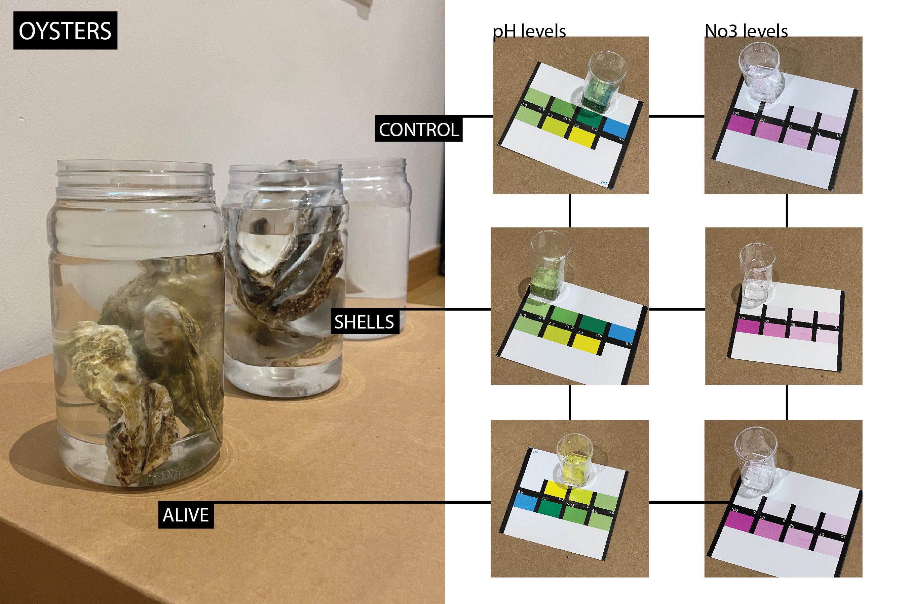
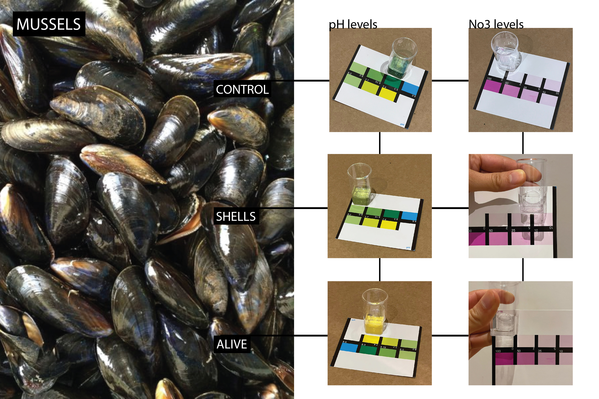

Class
Studio
Date
8 February 2022
Instructors
Oscar Tomico
Intervention 1
For this first intervention of the term, which asked us to dive deeper into our topics of interest, I teamed up with Paula Bustos and Paula Del Rio Arteaga. We decided to work together because we had common interests in biomaterials, sealife, regenerative materials, and restoration. Given this, and with the need of wanting to explore the resources and waste we had around us, we decided to experiment with shellfish and their incredible ability to filter water. We tested this using three different jars: one with alive shellfish, one with waste shells, and one control. Paula DRA and I went to the port to collect water for the experiment. We were going to collect it straight from the sea in front of the beach, but we believed the port water to be potentially more polluted. In fact, when we looked at the water, we could see oil floating on the surface. Once the water was collected in water bottles, it actually appeared much more clear than what we were expecting. At first we were slightly disappointed with this because we wouldn’t be able to see the shellfish work all the magic we knew they could, but on second thought were happy to see that the water near where we live is relatively clean.

How does it work?
Shellfish such as clams, oysters, and mussels filter water by incorporating nitrogen into their shells and tissues as they grow. When there is too much nitrogen, algal blooms can form which remove oxygen from the water. Tests are being done at larger scales that show that shellfish can play a part in remediating this. Oysters remove pollutants in water (up to 200 liters per day) by filtering them through their gills while mussels can also filter out microplastics and pesticides (up to 25 liters per day). Therefore, they act as natural water filters that keep the waters clean for the marine life around them. A decrease in their populations has been seen due to warming waters.
Sources: https://www.whoi.edu/oceanus/feature/can-clams-and-oysters-help-clean-up-waterways/ https://www.lombardodier.com/contents/corporate-news/responsible-capital/2021/may/shellfish-the-kidneys-of-the-sea.html
Test Procedure and results
As stated, jars were left with equal amounts of port water for 12 hours with either live oysters/mussels, waste shells, and a control. pH levels and nitrate levels were then tested to compare the difference.

The results show that the shellfish were indeed able to improve the quality of the water, or at the least change it. Even the shells themselves had an effect which I was skeptical about going into it. I would like to experiment with this further and take the next steps into making biomaterials out of the waste shells. From the test results, the shellfish have appeared to have lowered the pH, making it more neutral, and also lowered the levels of No3.